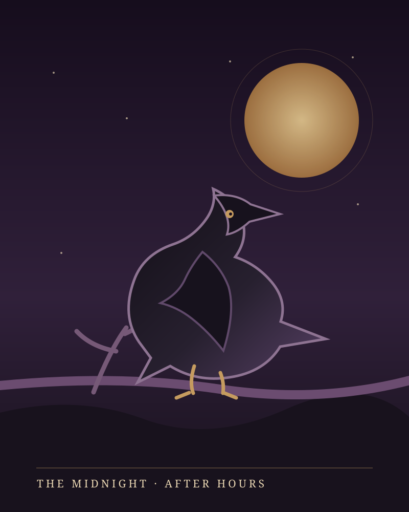
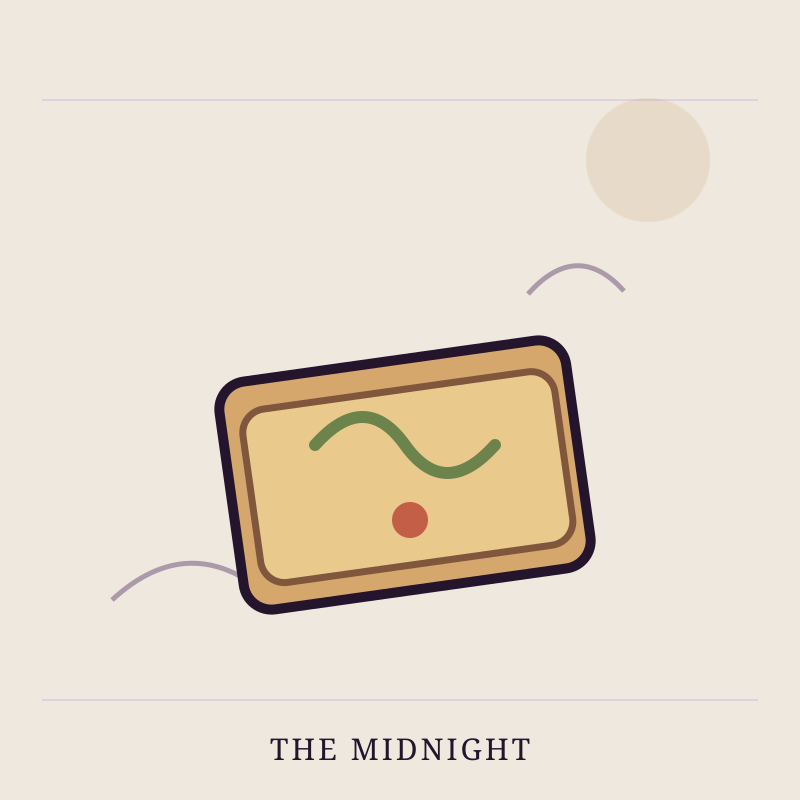
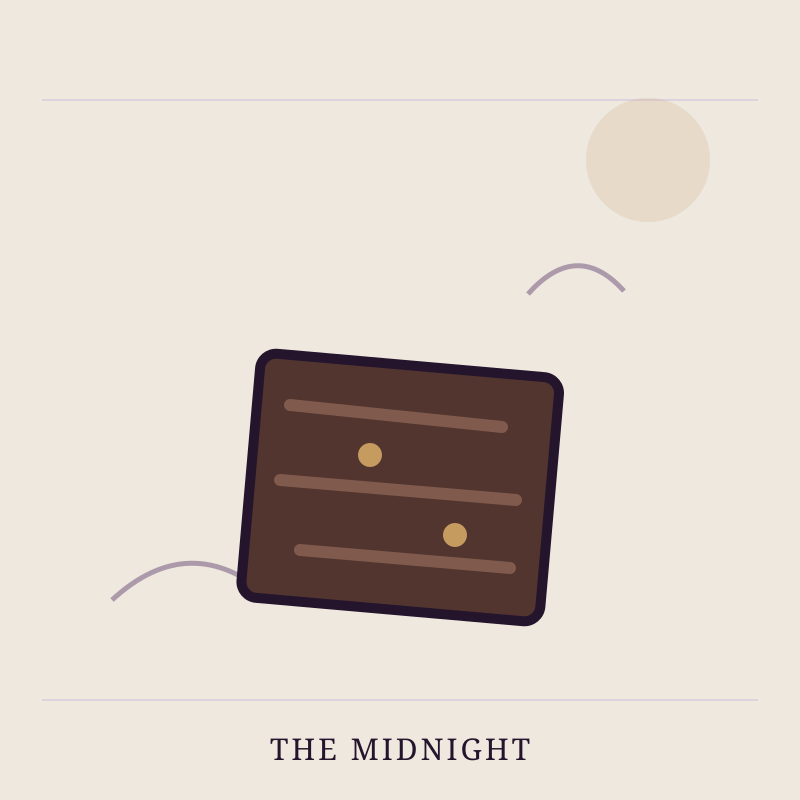

01 / ESPRESSO BAR
Raven latte
Double espresso, silky milk, a little vanilla.
₱95
Your after-class cafe
Espresso, matcha, and comfort food on San Marcelino. Pull up after your last class - we’re here until 3 AM.

A few house favorites


A good cup takes a minute
We pull each espresso to order, whisk matcha fresh, and make the hot sandwiches right here. No long wait, no complicated menu.
Find your usualEspresso, cold brew, tea, or matcha.
Toasties, oat bowls, and small-batch bakes.
Wi-Fi, outlets, and seats open until 3 AM.
A table after dark
Find us on San Marcelino Street in Ermita, a short walk from Adamson University. Bring your notes, your group, or just yourself.
Settle in
A little room tone for your break.